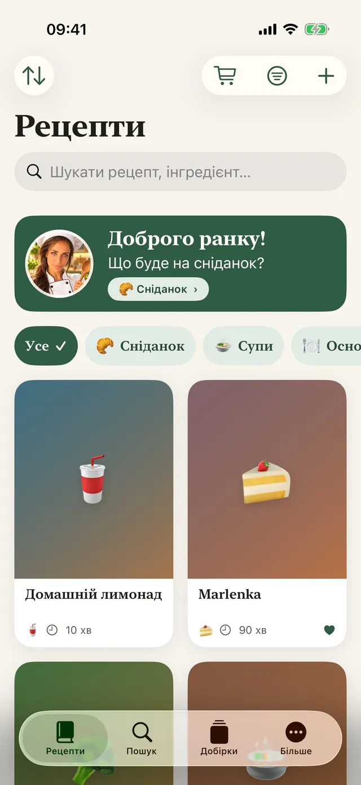
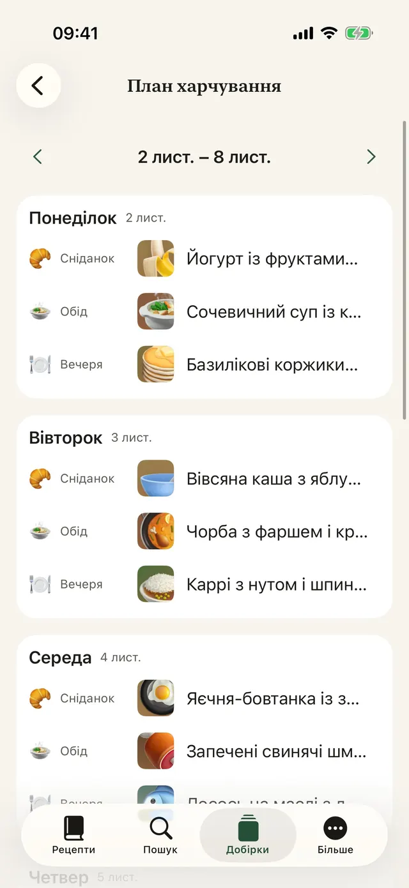
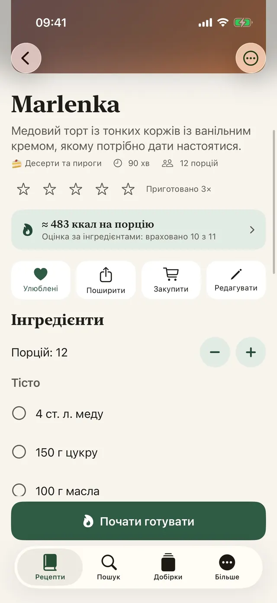
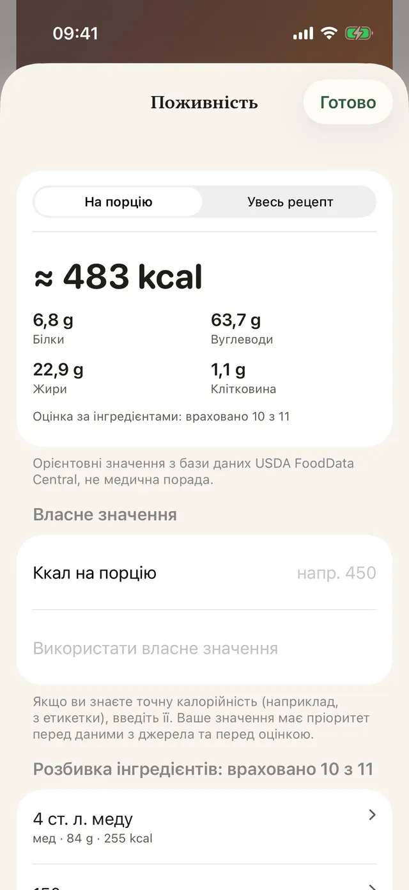
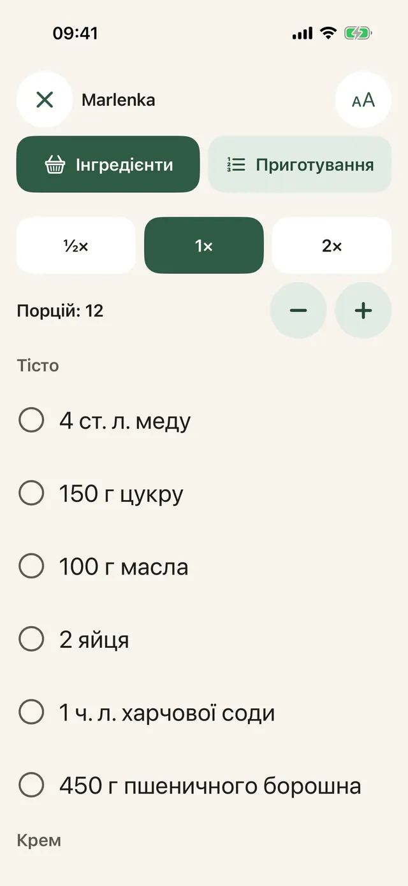
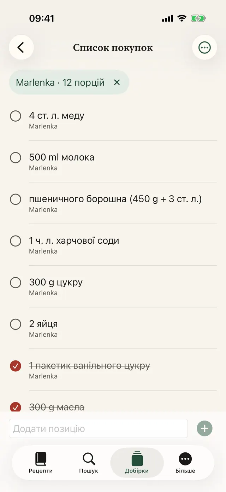
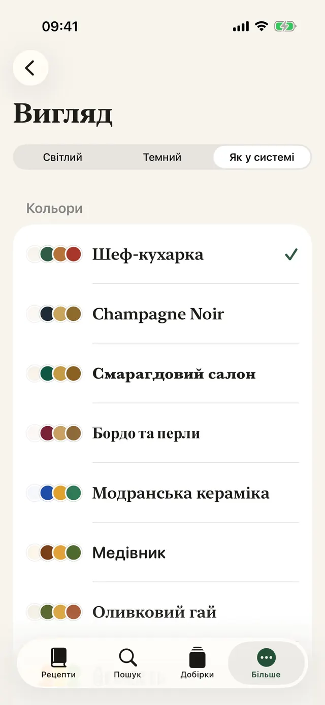
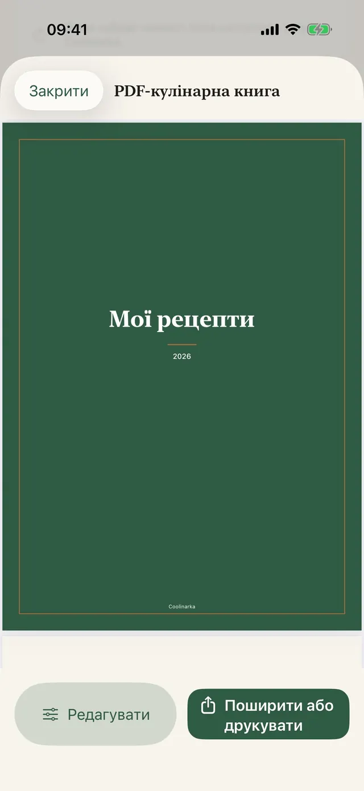
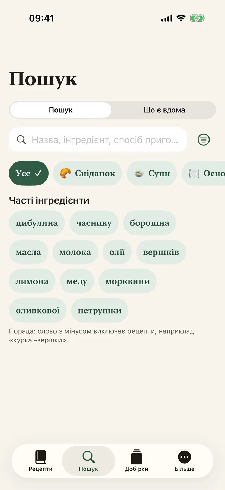
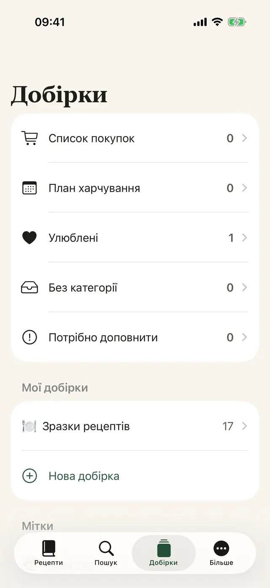

Збереження одним дотиком
В Instagram, Facebook або Safari торкніться «Поширити» й виберіть Coolinarka.
Збережіть рецепт з Instagram, Facebook, вебсайту чи відео. Coolinarka перетворить його на зрозумілий список інгредієнтів і кроків, а під час готування проведе вас крок за кроком.
Для iPhone та iPad, безкоштовно. Версія для Android незабаром у Google Play. Повідомте мене, коли вийдеДля iPhone, iPad та Android, безкоштовно.


Ось який вигляд має рецепт у дописі в соцмережі. Один дотик, і все на своїх місцях, разом із порціями, які можна перерахувати.
😍😍 Пенне з броколі у вершковому соусі!!! 400 г пенне, 1 головка броколі, 250 мл вершків для готування, 2 зубчики часнику, 50 г пармезану, сіль і перець ... Пенне відварюємо за інструкцією, за 4 хвилини до готовності додаємо суцвіття броколі. На олії коротко обсмажуємо часник, вливаємо вершки та прогріваємо. Відкинуту на друшляк пасту з броколі змішуємо з соусом і посипаємо пармезаном. 🔥🔥 #пенне #food
Проста паста, яку люблять навіть діти.
Приклад рецепта із застосунку. Справжні дописи часто ще хаотичніші, але Coolinarka впорається з ними навіть зі знімка екрана чи відео.
Великий шрифт, один крок на екрані, дисплей не згасає. Таймер запускається одним дотиком, навіть коли руки в борошні.
У демонстрації таймер працює прискорено.
Пенне відварюємо за інструкцією, за 4 хвилини до готовності додаємо суцвіття броколі.
Інгредієнти з кількох рецептів підсумовуються. Змініть країну й дивіться, як пошукове слово перекладається мовою магазину, навіть коли рецепт іншою мовою.
Товар до кошика ви додаєте в магазині. Застосунок не має доступу до вашого облікового запису в магазині. Доступність залежить від вашої адреси.
Українка в Польщі, українець у Словаччині, туристка в Празі. У чужому магазині вистачить однієї дрібної помилки, і в кошику вже щось зовсім інше. Coolinarka шукає мовою магазину, щоб із вами такого не сталося. Знаєте, що принесли б додому ви?
Дев’ять тем із власною іконкою, темний режим і більший шрифт. Виберіть, і зміниться вся ця сторінка, точнісінько як застосунок.
Справжні екрани, тією мовою, якою ви читаєте цю сторінку.









В Instagram, Facebook або Safari торкніться «Поширити» й виберіть Coolinarka.
З відео або запису екрана виходить рецепт, а мовлення розпізнається просто в телефоні.
Сплануйте весь тиждень, порожні клітинки заповніть з улюблених, а все разом надішліть до списку покупок.
Типи страв, мітки, улюблені та власні добірки.
За назвою, інгредієнтами або приготуванням, незалежно від діакритичних знаків.
Віджет «Що сьогодні приготувати» на початковому та замкненому екранах і Siri: «Що мені приготувати в Coolinarka».
Одержувач відкриє його в Coolinarka разом із фото, а ваших оцінок і нотаток у ньому немає.
Обрізання, поворот і фільтри.
Рецепти синхронізуються через iCloud між пристроями з тим самим обліковим записом Apple.
Зробіть резервну копію добірки або перенесіть її в інший застосунок.
Разом із прикладами рецептів та оцінкою калорій.
Застосунок працює без облікового запису, реклами й стеження. Рецепти залишаються на вашому пристрої та у вашому приватному iCloud, розробник не має до них доступу.
Рецепти, імпорт, експорт, резервні копії, iCloud і режим готування нічого не коштують. Plus купується один раз, без передплати, і ним можна ділитися в родині.
Стартова ціна 4,99 € до 30.11.2026, з 1.12.2026 14,99 €. Одноразово.
Ціна для єврозони, в інших країнах діє місцева ціна в App Store і Google Play. Значення орієнтовні, ґрунтуються на відкритих даних USDA FoodData Central і не є медичною порадою. Розрахунок відбувається на пристрої.
Завантажте Coolinarka і збережіть перший рецепт уже сьогодні.
Для iPhone та iPad, безкоштовно. Версія для Android незабаром у Google Play. Повідомте мене, коли вийдеДля iPhone, iPad та Android, безкоштовно.